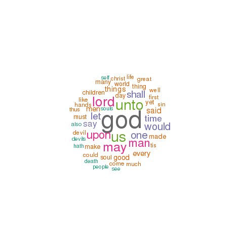

mather
This page describes a corpus named mather as created by a tool named the EEBO-TCP Workset Browser.
General statistics
An analysis of the corpus's metadata provides an overview of what and how many things it contains, when things were published, and the sizes of its items:
- Number of items - 8
- Publication date range - 1682 to 1690 (histogram : boxplot)
- Sizes in pages - 4 to 164 (histogram : boxplot)
- Total number of pages - 646
- Average number of pages per item - 80
Possible correlations between numeric characteristics of records in the catalog can be illustrated through a matrix of scatter plots. As you would expect, there is almost always a correlation between pages and number of words. Are others exist? For more detail, browse the catalog.
Notes on word usage
By counting and tabulating the words in each item of the corpus, it is possible to measure additional characteristics:
Perusing the list of all words in the corpus (and their frequencies) as well as all unique words can prove to be quite insightful. Are there one or more words in these lists connoting an idea of interest to you, and if so, then to what degree do these words occur in the corpus?
To begin to see how words of your choosing occur in specific items, search the collection.
Through the creation of locally defined "dictionaries" or "lexicons", it is possible to count and tabulate how specific sets of words are used across a corpus. This particular corpus employs three such dictionaries -- sets of: 1) "big" names, 2) "great" ideas, and 3) colors. Their frequencies are listed below:
The distribution of words (histograms and boxplots) and the frequency of words (wordclouds), and how these frequencies "cluster" together can be illustrated:
Items of interest
Based on the information above, the following items (and their associated links) are of possible interest:
- Shortest item (4 p.) - The declaration of the gentlemen, merchants, and inhabitants of Boston, and the countrey adjacent, April 18th, 1689 (TEI : HTML : plain text)
- Longest item (164 p.) - Memorable providences relating to witchcrafts and possessions a faithful account of many wonderful and surprising things that have befallen several bewitched and possesed person in New-England, particularly a narrative of the marvellous trouble and releef experienced by a pious family in Boston, very lately and sadly molested with evil spirits : whereunto is added a discourse delivered unto a congregation in Boston on the occasion of that illustrious providence : as also a discourse delivered unto the same congregation on the occasion of an horrible self-murder committed in the town : with an appendix in vindication of a chapter in a late book of remarkable providences from the calumnies of a Quaker at Pen-silvania / written by Cotton Mather ... and recommended by the ministers of Boston and Charleston. (TEI : HTML : plain text)
- Oldest item (1682) - A poem dedicated to the memory of the Reverend and excellent Mr. Urian Oakes, the late pastor to Christ's flock and præsident of Harvard Colledge in Cambridge ... (TEI : HTML : plain text)
- Most recent (1690) - Speedy repentance urged a sermon preached at Boston, December 29, 1689 : in the hearing and at the request of one Hugh Stone, [a mis]erable man [under a just sen]tence of [death] for a [tragical and] hor[rible murder : together with some account concerning the character, carriage, and execution of that unhappy malefactor : to which are added certain memorable providences relating to some other murders, & some great instances of repentance which have been seen amonst us / by Cotton Mather.] (TEI : HTML : plain text)
- Most thoughtful item - Small offers towards the service of the tabernacle in the wilderness four discourses accommodated unto the designs of practical godliness : preached partly at Boston, partly at Charleston / by Cotton Mather ; published by a gentleman lately restored from threatening sickness as a humble essay to serve the interest of religion, in gratitude unto God for his recovery. (TEI : HTML : plain text)
- Least thoughtful item - A poem dedicated to the memory of the Reverend and excellent Mr. Urian Oakes, the late pastor to Christ's flock and præsident of Harvard Colledge in Cambridge ... (TEI : HTML : plain text)
- Biggest name dropper - A poem dedicated to the memory of the Reverend and excellent Mr. Urian Oakes, the late pastor to Christ's flock and præsident of Harvard Colledge in Cambridge ... (TEI : HTML : plain text)
- Fewest quotations - The declaration of the gentlemen, merchants, and inhabitants of Boston, and the countrey adjacent, April 18th, 1689 (TEI : HTML : plain text)
- Most colorful - The declaration of the gentlemen, merchants, and inhabitants of Boston, and the countrey adjacent, April 18th, 1689 (TEI : HTML : plain text)
- Ugliest - Small offers towards the service of the tabernacle in the wilderness four discourses accommodated unto the designs of practical godliness : preached partly at Boston, partly at Charleston / by Cotton Mather ; published by a gentleman lately restored from threatening sickness as a humble essay to serve the interest of religion, in gratitude unto God for his recovery. (TEI : HTML : plain text)
Eric Lease Morgan, Librarian
University of Notre Dame
{kind=link}
{kind=link}
{kind=link}
{kind=link}
{kind=link}
{kind=link}
{kind=link}
{kind=link}
{kind=link}
{kind=link}
{kind=link}
{kind=link}
{kind=link}
{kind=link}
{kind=link}
{kind=link}
{kind=link}
{kind=link}
{kind=link}
{kind=link}
{kind=link}